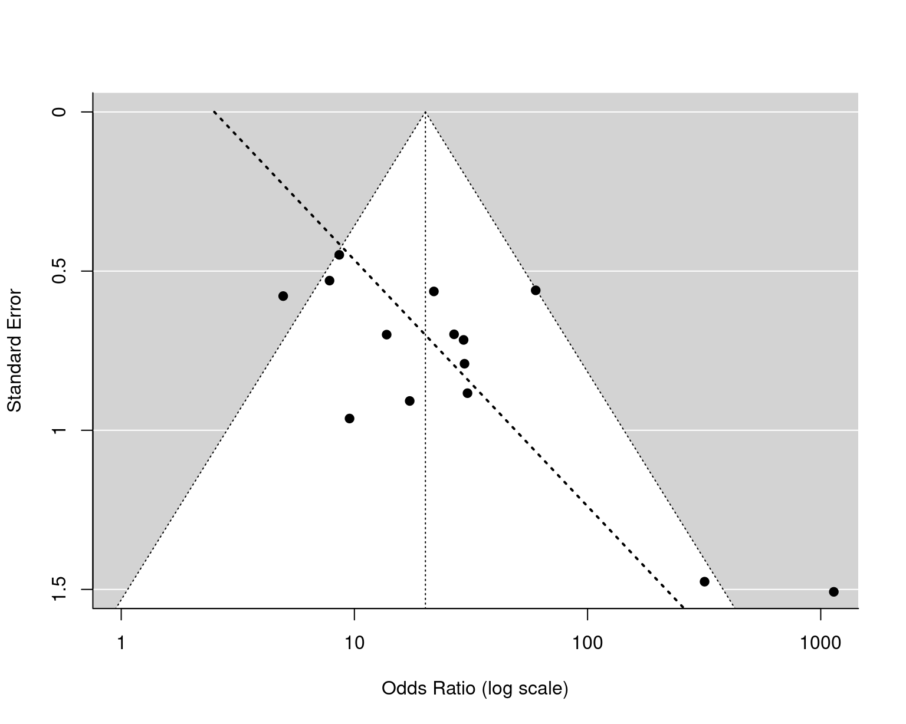
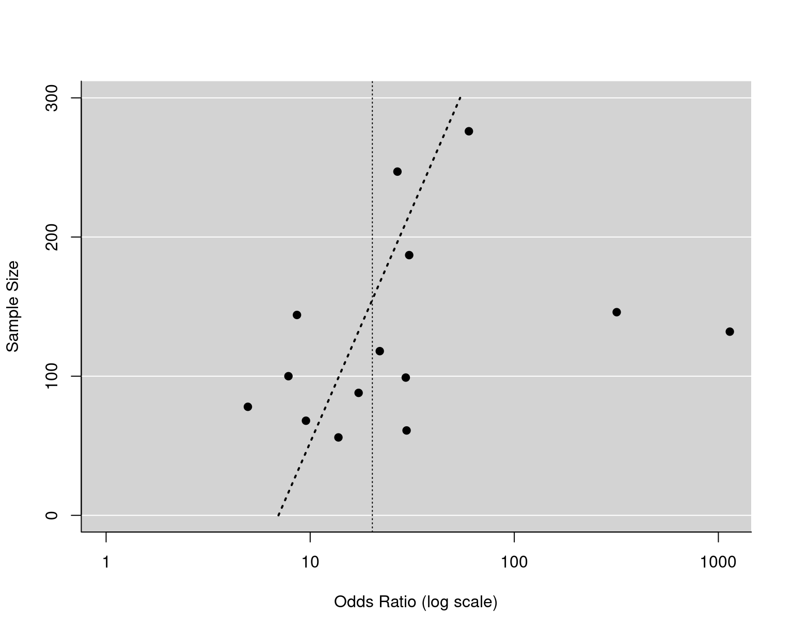

Studies on the Accuracy of Venous Ultrasonography for the Diagonosis of Deep Venous Thrombosis
dat.kearon1998.RdResults from diagnostic accuracy studies examining the accuracy of venous ultrasonography for the diagonosis of deep venous thrombosis.
dat.kearon1998
Format
The data frame contains the following columns:
| id | numeric | study id |
| author | character | study author(s) |
| year | numeric | publication year |
| patients | character | patient group (either symptomatic or asymptomatic patients) |
| tp | numeric | number of true positives |
| np | numeric | number of positive patients (cases) |
| tn | numeric | number of true negatives |
| nn | numeric | number of negative patients (non-cases) |
Details
The studies included in the dataset examined the accuracy of venous ultrasonography for the diagnossis of a first deep venous thrombosis in symptomatic and asymptomatic patients. Cases and non-cases were determined based on contrast venography. Venous ultrasonography was then used to make a diagnosis, leading to a given number of true positives and negatives.
A subset of this dataset (using only the studies with asymptomatic patients) was used by Deeks et al. (2005) to illustrate methods for detecting publication bias (or small-study effects) in meta-analyses of diagnostic accuracy studies.
Source
Kearon, C., Julian, J. A., Math, M., Newman, T. E., & Ginsberg, J. S. (1998). Noninvasive diagnosis of deep venous thrombosis. Annals of Internal Medicine, 128(8), 663--677. https://doi.org/10.7326/0003-4819-128-8-199804150-00011
References
Deeks, J. J., Macaskill, P., & Irwig, L. (2005). The performance of tests of publication bias and other sample size effects in systematic reviews of diagnostic test accuracy was assessed. Journal of Clinical Epidemiology, 58(9), 882--893. https://doi.org/10.1016/j.jclinepi.2005.01.016
Examples
### copy data into 'dat' dat <- dat.kearon1998 ### calculate diagnostic log odds ratios and corresponding sampling variances dat <- escalc(measure="OR", ai=tp, n1i=np, ci=nn-tn, n2i=nn, data=dat, add=1/2, to="all") dat#> id study year patients tp np tn nn yi vi #> 1 1 Elias et al. 1987 symptomatic 325 333 483 505 6.7128 0.1672 #> 2 2 Appleman et al. 1987 symptomatic NA NA 47 49 NA NA #> 3 3 Vogel et al. 1987 symptomatic 20 25 29 29 5.3932 2.2645 #> 4 4 Cronan et al. 1987 symptomatic 25 28 23 23 5.8361 2.3675 #> 5 5 O'Leary et al. 1988 symptomatic 22 25 24 25 4.6540 1.0376 #> 6 6 Lensing et al. 1989 symptomatic 70 77 142 143 6.7946 0.8212 #> 7 7 Monreal et al. 1989 symptomatic 40 46 18 19 4.3418 0.8993 #> 8 8 Rose et al. 1990 symptomatic 27 34 36 41 3.1918 0.3789 #> 9 9 Mitchell et al. 1991 symptomatic 25 29 28 35 3.0696 0.4299 #> 10 10 Schindler et al. 1990 symptomatic 40 40 27 37 5.3573 2.1563 #> 11 11 Mattos et al. 1992 symptomatic 39 41 29 36 4.1295 0.5925 #> 12 12 Heijboer et al. 1992 symptomatic 75 97 59 60 4.8911 0.7412 #> 13 13 Quintavalla et al. 1992 symptomatic 49 50 50 50 8.1116 2.7067 #> 14 14 Bradley et al. 1993 symptomatic 33 34 75 75 8.1234 2.7098 #> 15 15 Aronen et al. 1994 symptomatic 20 23 64 64 6.6275 2.3500 #> 16 16 Burke et al. 1994 symptomatic 94 121 346 353 5.0674 0.1832 #> 17 17 Wells et al. 1995 symptomatic 22 25 45 47 4.7622 0.7521 #> 18 18 Atri et al. 1996 symptomatic NA NA NA NA NA NA #> 19 19 Barnes et al. 1989 asymptomatic 10 25 47 53 1.5995 0.3347 #> 20 20 Borris et al. 1989 asymptomatic 15 24 29 32 2.6212 0.4894 #> 21 21 Borris et al. 1990 asymptomatic 10 14 44 47 3.3900 0.6256 #> 22 22 Barnes et al. 1991 asymptomatic 13 23 123 123 5.7607 2.1774 #> 23 23 Woolson et al. 1990 asymptomatic 10 32 55 56 2.8488 0.8244 #> 24 24 Woolson and Pottorff 1991 asymptomatic 16 61 184 186 3.2870 0.4880 #> 25 25 Ginsberg et al. 1991 asymptomatic 12 49 137 138 3.4195 0.7806 #> 26 26 Agnelli et al. 1992 asymptomatic 13 26 66 74 2.0571 0.2808 #> 27 27 Jongbloets et al. 1994 asymptomatic 16 80 NA NA NA NA #> 28 28 Davidson et al. 1992 asymptomatic 24 42 55 57 3.3810 0.5129 #> 29 29 Mattos et al. 1992 asymptomatic 17 27 85 91 3.0875 0.3179 #> 30 30 Elliot et al. 1993 asymptomatic 5 22 45 46 2.2548 0.9276 #> 31 31 Crippa et al. 1995 asymptomatic 18 31 240 245 4.0931 0.3141 #> 32 32 Magnusson et al. 1996 asymptomatic 24 28 104 104 7.0369 2.2726 #> 33 33 Atri et al. 1996 asymptomatic 26 55 81 89 2.1533 0.2016 #> 34 34 Lensing et al. 1997 asymptomatic NA NA NA NA NA NA### fit random-effects model for the symptomatic patients res <- rma(yi, vi, data=dat, subset=patients=="symptomatic")#> Warning: Studies with NAs omitted from model fitting.res#> #> Random-Effects Model (k = 16; tau^2 estimator: REML) #> #> tau^2 (estimated amount of total heterogeneity): 1.2663 (SE = 0.7846) #> tau (square root of estimated tau^2 value): 1.1253 #> I^2 (total heterogeneity / total variability): 66.20% #> H^2 (total variability / sampling variability): 2.96 #> #> Test for Heterogeneity: #> Q(df = 15) = 48.8101, p-val < .0001 #> #> Model Results: #> #> estimate se zval pval ci.lb ci.ub #> 5.1733 0.3747 13.8057 <.0001 4.4388 5.9077 *** #> #> --- #> Signif. codes: 0 ‘***’ 0.001 ‘**’ 0.01 ‘*’ 0.05 ‘.’ 0.1 ‘ ’ 1 #>### fit random-effects model for the asymptomatic patients res <- rma(yi, vi, data=dat, subset=patients=="asymptomatic")#> Warning: Studies with NAs omitted from model fitting.res#> #> Random-Effects Model (k = 14; tau^2 estimator: REML) #> #> tau^2 (estimated amount of total heterogeneity): 0.4534 (SE = 0.3776) #> tau (square root of estimated tau^2 value): 0.6734 #> I^2 (total heterogeneity / total variability): 48.58% #> H^2 (total variability / sampling variability): 1.94 #> #> Test for Heterogeneity: #> Q(df = 13) = 28.3304, p-val = 0.0081 #> #> Model Results: #> #> estimate se zval pval ci.lb ci.ub #> 3.0039 0.2682 11.2017 <.0001 2.4783 3.5295 *** #> #> --- #> Signif. codes: 0 ‘***’ 0.001 ‘**’ 0.01 ‘*’ 0.05 ‘.’ 0.1 ‘ ’ 1 #>#> #> pred ci.lb ci.ub pi.lb pi.ub #> 20.16 11.92 34.11 4.87 83.47 #>### regression test for funnel plot asymmetry using SE as predictor reg <- regtest(res, model="lm") reg#> #> Regression Test for Funnel Plot Asymmetry #> #> Model: weighted regression with multiplicative dispersion #> Predictor: standard error #> #> Test for Funnel Plot Asymmetry: t = 2.7886, df = 12, p = 0.0164 #> Limit Estimate (as sei -> 0): b = 0.9192 (CI: -0.6698, 2.5082) #>### corresponding funnel plot funnel(res, atransf=exp, xlim=c(0,7), at=log(c(1,10,100,1000)), ylim=c(0,1.5), steps=4)### regression test for funnel plot asymmetry using total sample size as predictor reg <- regtest(res, model="lm", predictor="ni") reg#> #> Regression Test for Funnel Plot Asymmetry #> #> Model: weighted regression with multiplicative dispersion #> Predictor: sample size #> #> Test for Funnel Plot Asymmetry: t = 1.8919, df = 12, p = 0.0829 #>### corresponding funnel plot funnel(res, yaxis="ni", atransf=exp, xlim=c(0,7), at=log(c(1,10,100,1000)), ylim=c(0,300), steps=4)### regression test for funnel plot asymmetry using 1/sqrt(ESS) as predictor (Deeks et al., 2005) dat$invessi <- 1/(4*dat$np) + 1/(4*dat$nn) tmp <- rma(yi, invessi, data=dat, subset=patients=="asymptomatic")#> Warning: Studies with NAs omitted from model fitting.#> #> Regression Test for Funnel Plot Asymmetry #> #> Model: weighted regression with multiplicative dispersion #> Predictor: standard error #> #> Test for Funnel Plot Asymmetry: t = -0.1182, df = 12, p = 0.9079 #> Limit Estimate (as sei -> 0): b = 3.6227 (CI: -0.8066, 8.0520) #>### corresponding funnel plot funnel(tmp, atransf=exp, xlim=c(0,7), at=log(c(1,10,100,1000)), ylim=c(0,.15), steps=4, refline=coef(res), level=0, ylab="1/root(ess)")### convert data to long format dat <- to.long(measure="OR", ai=tp, n1i=np, ci=tn, n2i=nn, data=dat.kearon1998, subset=patients=="asymptomatic")#> Warning: Tables with NAs omitted.#> study group out1 out2 #> 1 19 specificity 10 15 #> 2 19 sensitivity 47 6 #> 3 20 specificity 15 9 #> 4 20 sensitivity 29 3 #> 5 21 specificity 10 4 #> 6 21 sensitivity 44 3 #> 7 22 specificity 13 10 #> 8 22 sensitivity 123 0 #> 9 23 specificity 10 22 #> 10 23 sensitivity 55 1 #> 11 24 specificity 16 45 #> 12 24 sensitivity 184 2 #> 13 25 specificity 12 37 #> 14 25 sensitivity 137 1 #> 15 26 specificity 13 13 #> 16 26 sensitivity 66 8 #> 17 28 specificity 24 18 #> 18 28 sensitivity 55 2 #> 19 29 specificity 17 10 #> 20 29 sensitivity 85 6 #> 21 30 specificity 5 17 #> 22 30 sensitivity 45 1 #> 23 31 specificity 18 13 #> 24 31 sensitivity 240 5 #> 25 32 specificity 24 4 #> 26 32 sensitivity 104 0 #> 27 33 specificity 26 29 #> 28 33 sensitivity 81 8### calculate logit-transformed sensitivities dat <- escalc(measure="PLO", xi=out1, mi=out2, data=dat, add=1/2, to="all", include=group=="sensitivity") dat#> study group out1 out2 yi vi #> 1 19 specificity 10 15 NA NA #> 2 19 sensitivity 47 6 1.9889 0.1749 #> 3 20 specificity 15 9 NA NA #> 4 20 sensitivity 29 3 2.1316 0.3196 #> 5 21 specificity 10 4 NA NA #> 6 21 sensitivity 44 3 2.5427 0.3082 #> 7 22 specificity 13 10 NA NA #> 8 22 sensitivity 123 0 5.5094 2.0081 #> 9 23 specificity 10 22 NA NA #> 10 23 sensitivity 55 1 3.6109 0.6847 #> 11 24 specificity 16 45 NA NA #> 12 24 sensitivity 184 2 4.3014 0.4054 #> 13 25 specificity 12 37 NA NA #> 14 25 sensitivity 137 1 4.5182 0.6739 #> 15 26 specificity 13 13 NA NA #> 16 26 sensitivity 66 8 2.0571 0.1327 #> 17 28 specificity 24 18 NA NA #> 18 28 sensitivity 55 2 3.1001 0.4180 #> 19 29 specificity 17 10 NA NA #> 20 29 sensitivity 85 6 2.5767 0.1655 #> 21 30 specificity 5 17 NA NA #> 22 30 sensitivity 45 1 3.4122 0.6886 #> 23 31 specificity 18 13 NA NA #> 24 31 sensitivity 240 5 3.7780 0.1860 #> 25 32 specificity 24 4 NA NA #> 26 32 sensitivity 104 0 5.3423 2.0096 #> 27 33 specificity 26 29 NA NA #> 28 33 sensitivity 81 8 2.2605 0.1299### calculate logit-transformed specificities dat <- escalc(measure="PLO", xi=out1, mi=out2, data=dat, add=1/2, to="all", include=group=="specificity") dat#> study group out1 out2 yi vi #> 1 19 specificity 10 15 -0.3895 0.1598 #> 2 19 sensitivity 47 6 1.9889 0.1749 #> 3 20 specificity 15 9 0.4895 0.1698 #> 4 20 sensitivity 29 3 2.1316 0.3196 #> 5 21 specificity 10 4 0.8473 0.3175 #> 6 21 sensitivity 44 3 2.5427 0.3082 #> 7 22 specificity 13 10 0.2513 0.1693 #> 8 22 sensitivity 123 0 5.5094 2.0081 #> 9 23 specificity 10 22 -0.7621 0.1397 #> 10 23 sensitivity 55 1 3.6109 0.6847 #> 11 24 specificity 16 45 -1.0144 0.0826 #> 12 24 sensitivity 184 2 4.3014 0.4054 #> 13 25 specificity 12 37 -1.0986 0.1067 #> 14 25 sensitivity 137 1 4.5182 0.6739 #> 15 26 specificity 13 13 0.0000 0.1481 #> 16 26 sensitivity 66 8 2.0571 0.1327 #> 17 28 specificity 24 18 0.2809 0.0949 #> 18 28 sensitivity 55 2 3.1001 0.4180 #> 19 29 specificity 17 10 0.5108 0.1524 #> 20 29 sensitivity 85 6 2.5767 0.1655 #> 21 30 specificity 5 17 -1.1575 0.2390 #> 22 30 sensitivity 45 1 3.4122 0.6886 #> 23 31 specificity 18 13 0.3151 0.1281 #> 24 31 sensitivity 240 5 3.7780 0.1860 #> 25 32 specificity 24 4 1.6946 0.2630 #> 26 32 sensitivity 104 0 5.3423 2.0096 #> 27 33 specificity 26 29 -0.1072 0.0716 #> 28 33 sensitivity 81 8 2.2605 0.1299### bivariate random-effects model for logit sensitivity and specificity res <- rma.mv(yi, vi, mods = ~ group - 1, random = ~ group | study, struct="UN", data=dat) res#> #> Multivariate Meta-Analysis Model (k = 28; method: REML) #> #> Variance Components: #> #> outer factor: study (nlvls = 14) #> inner factor: group (nlvls = 2) #> #> estim sqrt k.lvl fixed level #> tau^2.1 0.5408 0.7354 14 no sensitivity #> tau^2.2 0.4231 0.6505 14 no specificity #> #> rho.snst rho.spcf snst spcf #> sensitivity 1 - 14 #> specificity -0.4547 1 no - #> #> Test for Residual Heterogeneity: #> QE(df = 26) = 86.5672, p-val < .0001 #> #> Test of Moderators (coefficients 1:2): #> QM(df = 2) = 147.4667, p-val < .0001 #> #> Model Results: #> #> estimate se zval pval ci.lb ci.ub #> groupsensitivity 3.0092 0.2582 11.6531 <.0001 2.5031 3.5154 *** #> groupspecificity -0.0498 0.2027 -0.2457 0.8059 -0.4472 0.3475 #> #> --- #> Signif. codes: 0 ‘***’ 0.001 ‘**’ 0.01 ‘*’ 0.05 ‘.’ 0.1 ‘ ’ 1 #>### estimated average sensitivity and specificity based on the model predict(res, newmods = rbind(c(1,0),c(0,1)), transf=transf.ilogit, tau2.levels=c(1,2), digits=2)#> #> pred ci.lb ci.ub pi.lb pi.ub tau2.level #> 1 0.95 0.92 0.97 0.81 0.99 sensitivity #> 2 0.49 0.39 0.59 0.20 0.78 specificity #>### estimated average diagnostic odds ratio based on the model predict(res, newmods = c(1,1), transf=exp, digits=2)#> #> pred ci.lb ci.ub pi.lb pi.ub tau2.level #> 19.29 11.22 33.14 NA NA NA #>